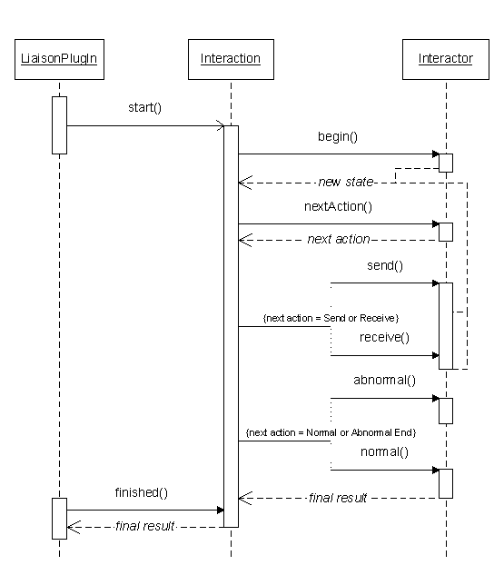

<html>

<head>
<meta http-equiv="Content-Language" content="en-us">
<meta http-equiv="Content-Type" content="text/html; charset=windows-1252">
<meta name="GENERATOR" content="Microsoft FrontPage 4.0">
<meta name="ProgId" content="FrontPage.Editor.Document">
<title>Liaison Capability Tutorial</title>
</head>

<body>

<table border="0" width="100%">
  <tr>
    <td width="33%"><font size="2"><b>Liaison Capability Tutorial</b></font></td>
    <td width="33%">
      <p align="center"><a href="deputies.html"></a>
      <a href="index.html"></a>
      <a href="interactions.html"></a></td>
    <td width="34%">
      <p align="right"><b><font size="2"><a href="../javadoc/index.html">Javadoc</a></font></b></td>
  </tr>
</table>
<hr color="#800080">
<h2 align="left"><b>Basic Interactors</b></h2>
<blockquote>
<p class="MsoNormal">Interactions with specific external agents must be highly
differentiated somehow, in order to allow for the huge range of variability in
the content, control, and communication methods required for different
exchanges. The liaison capability encapsulates this differentiability with the <code>Interactor</code>
interface.<o:p>
</o:p>
</p>
<span style="font-size:12.0pt;font-family:&quot;Times New Roman&quot;;mso-fareast-font-family:
&quot;Times New Roman&quot;;mso-ansi-language:EN-US;mso-fareast-language:EN-US;
mso-bidi-language:AR-SA">An Interactor is any object that implements specialized
versions of the generic actions performed during an interaction, along with some
decision logic that controls the order of those actions. In effect, interactors
contain the pieces of a coupling for connecting the internal ALP environment
with an external agent. Each interactor instance acts as a kind of specialized
extension to the generic <code>Interaction</code> engine; the interaction
instance provides a standardized control framework, while the interactor
instance provides a customized, appropriate behavior pattern.</span>
  <blockquote>
    <pre>public interface Interactor {

  public Object begin (Object o, Interaction iaction)
    throws ActionTimeoutException, InteractionTimeoutException;

  public Object receive (Object o, Interaction iaction)
    throws ActionTimeoutException, InteractionTimeoutException;

  public Object send (Object o, Interaction iaction)
    throws ActionTimeoutException, InteractionTimeoutException;

  public Object normalEnd (Object o, Interaction iaction)
    throws ActionTimeoutException, InteractionTimeoutException;

  public void abnormalEnd (Object o, Interaction iaction)
    throws ActionTimeoutException, InteractionTimeoutException;

  public ActionType nextAction (Object o, Interaction iaction, 
                                boolean priorActExpired);

}</pre>
  </blockquote>
  <p class="MsoNormal">The five action methods are <code>begin</code>, <code>receive</code>,
  <code>send</code>, <code>normalEnd</code>, and <code>abnormalEnd</code>.&nbsp;
  Each of them is passed an object (representing a state of some kind) and an <code>Interaction</code>,
  and each is expected to return a new state object when it is finished (except
  for <code>abnormalEnd</code>, which returns nothing).&nbsp; The <code>begin</code>,
  <code>normalEnd</code>, and <code>abnormalEnd</code> methods can normally be
  invoked only once during a single interaction thread.&nbsp; The same <code>Interaction</code>
  instance will be passed to these action methods during the course of a single
  interaction, thereby enabling a single Interactor instance to be invoked by
  multiple interaction threads (although doing so may require that these methods
  be synchronized for safety).</p>
<p class="MsoNormal">The <code>nextAction</code> method is invoked repeatedly
during the execution of an interaction thread; its job is to examine the current
state (passed as the first argument) of an interaction and to determine which
type of action should be performed next.&nbsp; These steps repeat (action method
followed by next action selection) until either the normalEnd or abnormalEnd is
selected and performed; the following augmented UML sequence diagram gives some
idea of this process.&nbsp; (The true picture is complicated by the intervention
of a <code>LiaisonDeputy</code>.)</p>
<p class="MsoNormal">&nbsp;</p>
<p class="MsoNormal" align="center"><span style="font-size:12.0pt;font-family:&quot;Times New Roman&quot;;
mso-fareast-font-family:&quot;Times New Roman&quot;;mso-ansi-language:EN-US;mso-fareast-language:
EN-US;mso-bidi-language:AR-SA"><!--[if gte vml 1]><v:shapetype id="_x0000_t75"
 coordsize="21600,21600" o:spt="75" o:preferrelative="t" path="m@4@5l@4@11@9@11@9@5xe"
 filled="f" stroked="f">
 <v:stroke joinstyle="miter"/>
 <v:formulas>
  <v:f eqn="if lineDrawn pixelLineWidth 0"/>
  <v:f eqn="sum @0 1 0"/>
  <v:f eqn="sum 0 0 @1"/>
  <v:f eqn="prod @2 1 2"/>
  <v:f eqn="prod @3 21600 pixelWidth"/>
  <v:f eqn="prod @3 21600 pixelHeight"/>
  <v:f eqn="sum @0 0 1"/>
  <v:f eqn="prod @6 1 2"/>
  <v:f eqn="prod @7 21600 pixelWidth"/>
  <v:f eqn="sum @8 21600 0"/>
  <v:f eqn="prod @7 21600 pixelHeight"/>
  <v:f eqn="sum @10 21600 0"/>
 </v:formulas>
 <v:path o:extrusionok="f" gradientshapeok="t" o:connecttype="rect"/>
 <o:lock v:ext="edit" aspectratio="t"/>
</v:shapetype><v:shape id="_x0000_i1025" type="#_x0000_t75" style='width:416.25pt;
 height:483pt' o:ole="">
 <v:imagedata src="file:///C:/TEMP/msoclip1/01/clip_image001.wmz" o:title=""/>
</v:shape><![endif]-->
<!--[if gte mso 9]><xml>
 <o:OLEObject Type="Embed" ProgID="Visio.Drawing.6" ShapeID="_x0000_i1025"
  DrawAspect="Content" ObjectID="_1049303826">
 </o:OLEObject>
</xml><![endif]-->
</span></p>
<p class="MsoNormal">The <code>ActionType</code> instance returned by the <code>nextAction</code>
method uniquely identifies one of the action methods implemented by its
Interactor; they are identified by numeric or string constants like <code>&quot;SEND&quot;</code>
and <code>&quot;ABORT&quot;</code> (see the <code>ActionType</code> class code
for details).&nbsp; One simple way to set this up is to implement state objects
as strings with values corresponding to specific <code>ActionTypes</code>, have
each action method return a string for the <i>next </i>ActionType to be
performed, and have nextAction return the <code>ActionType</code> associated
with the state string it is passed:</p>
<blockquote>
  <pre>import com.globalinfotek.coabsgrid.*;
import com.prc.alp.liaison.interact.*;
import com.prc.alp.liaison.plugin.*;

public class TrafficMonitorInitiator
  implements Interactor {

  public TrafficMonitorInitiator (CoABSLiaisonDeputy dep,
                                  AgentRep weatherAgent) {
    ...
  }
  
  public Object begin (Object o, Interaction iaction)
    throws ActionTimeoutException, InteractionTimeoutException {
    ...
    return &quot;SEND&quot;;
  }

  public Object receive (Object o, Interaction iaction)
    throws ActionTimeoutException, InteractionTimeoutException {
    ...
    return &quot;END&quot;;
  }

  public Object send (Object o, Interaction iaction)
    throws ActionTimeoutException, InteractionTimeoutException {
    ...
    return &quot;RECEIVE&quot;;
  }

  public Object normalEnd (Object o, Interaction iaction)
    throws ActionTimeoutException, InteractionTimeoutException {
    ...
    return aFinalResult;
  }

  public void abnormalEnd (Object o, Interaction iaction)
    throws ActionTimeoutException, InteractionTimeoutException {
    ...
    System.err.println(&quot;Something bad happened!&quot;);
  }

  public ActionType nextAction (Object o, Interaction iaction, 
                                boolean priorActExpired) {
    if ( o == null )
      return new ActionType(&quot;BEGIN&quot;);
    else
      return new ActionType((String) o);
  }

}</pre>
</blockquote>
<p>We'll postpone a discussion of the constructor and the exceptions temporarily
to focus on the what the action methods are doing.&nbsp; In this example <code>Interactor</code>, the <code>begin</code> method (which
is always called first during an interaction thread) performs some
initialization and then returns the string <code> &quot;SEND&quot;</code> as the new
state.&nbsp; When the <code>nextAction</code> method is passed this state
object, it simply returns the equivalent send <code>ActionType</code>, which
will cause the interaction thread to execute the <code>send</code> method
next.&nbsp; Each action method returns a string that indicates the next action
method to perform.&nbsp; Of course, this is a simple example; a state could be a
very complex object, and the <code> nextAction</code> method might need to execute some
sophisticated algorithm to determine the appropriate next action method based on
that state.</p>
<p>Note also that the <code>normalEnd</code> method returns an object, but this
is not treated as a state, because the interaction thread terminates after it
executes a <code> normalEnd</code> method.&nbsp; Instead, the returned object is saved as a
final result in a form that can be accessed later by anything with a reference
to the original <code>Interaction</code> instance.&nbsp; Not all interactors
generate such a final result; in that case, the <code>normalEnd</code> method
can return a <code>null</code> or an instance of a special class (<code>InteractionResult</code>)
if it does not wish to reserve <code>null</code> for that purpose.</p>
  <p>Once an <code>Interactor</code> has been defined, it is possible to have
  our liaison PlugIn engage in an interaction.</p>
</blockquote>
<hr color="#800080">
<table border="0" width="100%">
  <tr>
    <td width="33%"><font size="2"><b>Liaison Capability Tutorial</b></font></td>
    <td width="33%">
      <p align="center"><a href="deputies.html"></a>
      <a href="index.html"></a>
      <a href="interactions.html"></a></td>
    <td width="34%">
      <p align="right"><b><font size="2"><a href="../javadoc/index.html">Javadoc</a></font></b></td>
  </tr>
</table>
<p align="center"><font size="1"><a href="copyright.html">Copyright Notice</a></font></p>
<p align="left">&nbsp;</p>

</body>

</html>
